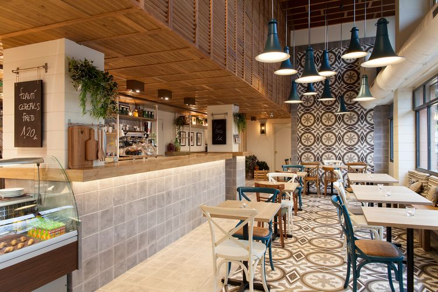

Filosofi
Gibran Cafe adalah cermin dari Bentuk keindahan dalam kesederhanaan. Seiring dengan estetika yang bersih dan minimalis, kami percaya bahwa keindahan sejati dapat ditemukan dalam hal-hal yang sederhana. Kami menciptakan ruang yang tidak hanya memanjakan indera, tetapi juga menyentuh jiwa. Desain interior yang simpel, dipadukan dengan palet warna yang tenang, menciptakan suasana yang menenangkan dan membebaskan pikiran.
Setiap detail dipilih dengan cermat untuk menciptakan keseluruhan yang harmonis. Seperti secangkir kopi yang lezat, setiap elemen memiliki peran penting dalam membentuk pengalaman yang tak terlupakan. Kami mengutamakan kualitas tanpa mengorbankan kehangatan. Cafe ini bukan hanya tempat untuk bersantai, tetapi juga ruang untuk menemukan inspirasi dan merenung.
Kenyamanan adalah pijakan utama kami. Kami berusaha memberikan lebih dari sekadar tempat untuk minum kopi; kami menciptakan pelukan hangat bagi setiap pengunjung. Dengan pencahayaan yang lembut, furnitur yang nyaman, dan sentuhan tumbuhan hijau yang menyejukkan, kami mengajak setiap orang untuk melupakan kekhawatiran sejenak dan menemukan kedamaian dalam kesederhanaan.